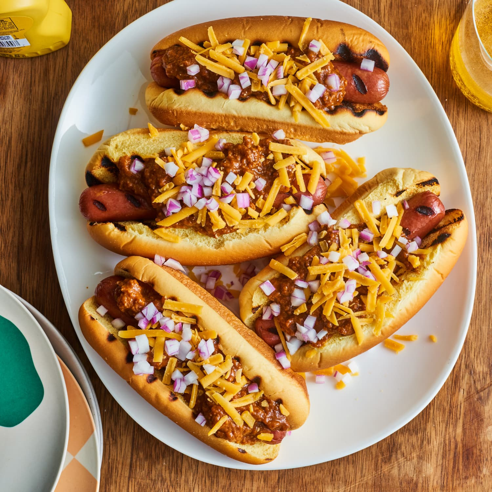

Chilidogs

Description
This is a very cheap and easy recipe only requiring three ingredients!
Ingredients
- Hotdog buns
- Bar S Classic Franks
- Can of Hormel brand Chili with Beans
Cooking steps
- Boil hotdogs (4 to 5 minutes total)
- While hotdogs are boiling, begin heating chili on stove until warm or pour into microwave safe dish and microwave for 1 1/2 to 2 minutes
- Once hotdogs are finished boiling, place in buns and top with warm chili and enjoy!
Return to home